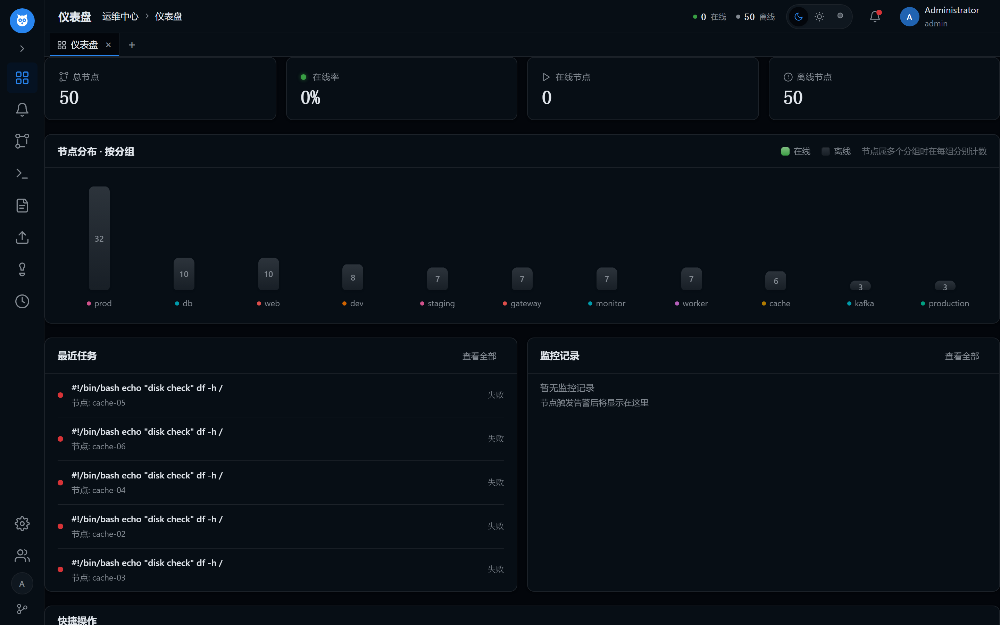

节点管理
注册、分组、标签化管理任意数量的节点，YAML/JSON 批量导入导出，一键连通性检查。
无 Agent 的 SSH 批量运维平台：批量命令执行、YAML 剧本编排、监控告警自愈、AI 自然语言运维 —— 单一二进制，开箱即用。
从批量执行到智能自愈，覆盖日常运维全流程
注册、分组、标签化管理任意数量的节点，YAML/JSON 批量导入导出，一键连通性检查。
按分组 / 标签 / 节点筛选目标，并行执行 Shell 命令与脚本，支持异步任务与历史回溯。
owl exec run "uptime" --groups web
类 Ansible 的 YAML 剧本：pre_tasks / tasks / post_tasks、变量、条件、标签、dry-run。
tasks:
- name: restart nginx
command: systemctl restart nginx
when: ansible_os == "linux"
上传、下载之外，还支持 P2P 自扩散与中继传输 —— 大文件在节点间接力分发。
磁盘 / 内存 / 负载等指标采集，规则化告警（邮件 / Webhook），内置自动处置与危险操作审批闭环。
自然语言直达操作：执行命令、生成剧本、查询节点。支持 OpenAI / Anthropic / Qwen / DeepSeek。
owl ai "在所有 web 节点上执行 df -h"
owl serve 一键启动管理控制台：RBAC 四角色、浏览器内 xterm 终端、WebSocket 实时推送。
owl tui 打开 Nodes / Exec / File / AI 四面板终端工作台，catppuccin / nord / dracula 多主题。
控制端主动 SSH 推送，目标节点不安装任何常驻进程
Web 控制台真实截图，owl serve 即刻拥有

三步完成第一次批量运维
下载对应平台的二进制（以 Linux amd64 为例，其他平台见下方下载区）：
curl -LO https://github.com/cangyunye/go-owl/releases/latest/download/owl-linux-amd64
chmod +x owl-linux-amd64 && sudo mv owl-linux-amd64 /usr/local/bin/owl只需目标的 SSH 地址与账号，节点上什么都不用装：
owl node add web-01 --address 192.168.1.10 --user root --groups web
owl node check --all对整个分组同时执行命令，或交给 AI 一句话搞定：
owl exec run "uptime" --groups web
owl ai "哪些节点磁盘使用率超过 80%？"owl serve --port 8080全部二进制来自 GitHub Releases，直链下载无需注册
查看历史版本与全部资产 → 偏好在源码？make build 十秒出包。